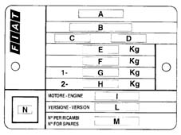

VEHICLE IDENTIFICATION DATA PLATE
- Path
- Technical Data > VEHICLE INTRODUCTION > IDENTIFICATION PLATES > VEHICLE IDENTIFICATION DATA PLATE
- Kind
- technical data / specifications
- Applies to
- all engines; all production periods
- Interactive page
- https://sloeber94.github.io/elrnDB-fDct/en/#/244000004
Applies to: all engines; all production periods
It is fitted on the engine compartment front crossmember.

- A. Name of manufacturer
- B. Homologation number
- C. Vehicle type identification code
- D. Chassis manufacture number
- E. Maximum authorized weight of vehicle fully laden
- F. Maximum authorized weight of vehicle fully laden plus trailer
- G. Maximum authorized weight on first axle (front)
- H. Maximum authorized weight on second axle (rear)
- I. Engine type
- L. Bodywork version code
- M. Spares number
- N. Correct value of noise absorption coefficient (Diesel and turbo Diesel engines only)